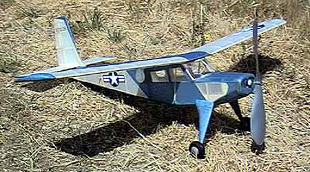
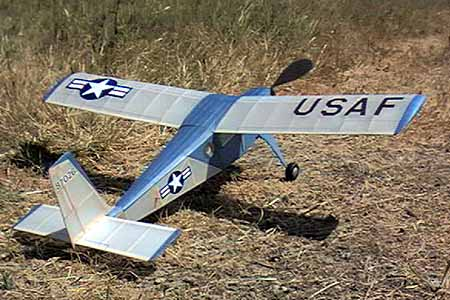

|
George Benson bulit this model from the Herr Engineering kit. All covering is Japanese tissue. The markings are color photocopies that were sanded to reduce thickness and weight. The wheels were turned from laminated balsa and ply.
It looks right at home working from this unimproved country air strip. |
Copyright 1999, Thayer Syme. All rights reserved